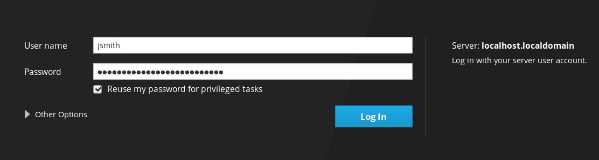

Chapter 9. 开始使用RHEL Web控制台
以下部分旨在帮助您在Red Hat Enterprise Linux 8中安装Web控制台，并在浏览器中打开Web控制台。您还将学习如何在RHEL 8 Web控制台中添加远程主机并监控它们。
- 安装了Red Hat Enterprise Linux 8。
- 启用网络。
已注册的系统附有适当的订阅。
要获得订阅，请参阅链接： 在Web控制台中管理订阅 。
RHEL Web控制台是一个基于Web的Red Hat Enterprise Linux 8界面，用于管理和监视本地系统以及位于网络环境中的Linux服务器。

RHEL Web控制台为您提供了广泛的管理任务，包括：
- 管理服务
- 管理用户帐户
- 管理和监控系统服务
- 配置网络接口和防火墙
- 查看系统日志
- 管理虚拟机
- 创建诊断报告
- 设置内核转储配置
- 配置SELinux
- 更新软件
- 管理系统订阅
RHEL Web控制台使用与终端中相同的系统API，并且在终端中执行的操作会立即反映在RHEL Web控制台中。
您可以监视网络环境中系统的日志及其性能，以图形形式显示。此外，您可以直接在Web控制台中或通过终端更改设置。
Red Hat Enterprise Linux 8包含默认安装在许多安装变体中的RHEL 8 Web控制台。如果您的系统不是这种情况，请安装Cockpit软件包并设置cockpit.socket服务以启用RHEL 8 Web控制台。
程序
安装
cockpit包：$ sudo yum install cockpit
（可选）启用并启动运行Web服务器的cockpit.socket服务。如果需要通过Web控制台连接到系统，则必须执行此步骤。
$ sudo systemctl enable --now cockpit.socket
要验证以前的安装和配置，可以打开Web控制台 。
如果您使用自定义防火墙配置文件，则需要将cockpit服务添加到firewalld以在firewalld中打开端口9090：
$ sudo firewall-cmd --add-service=cockpit --permanent $ firewall-cmd --reload
下面介绍使用系统用户名和密码首次登录RHEL Web控制台。
先决条件
使用以下浏览器之一打开Web控制台：
- Mozilla Firefox 52及更高版本
- 谷歌Chrome 57及更高版本
- Microsoft Edge 16及更高版本
系统用户帐户凭据
RHEL Web控制台使用位于
/etc/pam.d/cockpit的特定PAM堆栈。使用PAM进行身份验证允许您使用系统上任何本地帐户的用户名和密码登录。
程序
在Web浏览器中打开Web控制台：
- 本地：
https://localhost:9090 - 远程使用服务器的主机名：
https://example.com:9090：//example.com：https://example.com:9090 远程服务器的IP地址：
https://192.0.2.2:9090：https://192.0.2.2:9090：https://192.0.2.2:9090如果您使用自签名证书，浏览器会发出警告。检查证书并接受安全例外以继续登录。
控制台从
/etc/cockpit/ws-certs.d目录加载证书，/etc/cockpit/ws-certs.d字母顺序使用扩展名为.cert的最后一个文件。为避免必须授予安全性例外，请安装由证书颁发机构（CA）签名的证书。
- 本地：
在登录屏幕中，输入您的系统用户名和密码。

（可选）单击“ 重用我的特权任务密码”选项。
如果您用于登录的用户帐户具有sudo权限，则可以在Web控制台中执行特权任务，例如安装软件或配置SELinux。
- 单击“ 登录” 。
身份验证成功后，将打开RHEL Web控制台界面。